I left very early one day on my way to Madrid. I stopped there to pick up people and make a Blablacar to Jaén. In little more than 5 hours I was already in Jaén, where for the end of August it was not very hot either. Just over 35 degrees in the sun.
I really liked the cathedral in Jaén, which is the only one in Spain that can be fully visited from the second floor and covered from different angles. It is the only cathedral in Spain surrounded by balconies. It consists of balconies on that floor and towards there the faithful could see on the two festive dates where it is shown. It is one of the oldest faces of Jesus and is from before the 5th century. Besides, it has excellent panoramic views from this floor to see the square and beyond.
There are nine balconies on the main façade alone, although there are 62 in total (27 exterior and 35 interior, as well as more than 100 windows). "It has balconies around its perimeter, both inside and out, and that makes it unique." All connected by a central corridor that completely surrounds the temple and through which the public can walk safely, thus achieving views into the interior that show a different perspective than what we are used to. The same towards the outside, where the low roofs of the houses give way to fields of olive trees on the horizon.
The cathedral is in itself a great reliquary where the Holy Face is kept, which is why it is built that way.
In the past, every Good Friday and August 15 – Feast of the Assumption of the Virgin – the relic was displayed on the balconies, one by one, inside and outside, so that all the faithful could see it. Thus the town and the countryside were blessed.
That Holy Face, which determined the existence of the balconies in the cathedral, is kept under a maximum security safe with seven keys in the Main Chapel. "They say, that on the way to Calvary, Veronica gave Jesus a cloth to wipe away the sweat and tears. His face was impregnated in the cloth that was folded in two. When they stretched it out, they saw that the face had been reproduced in the two parts of the cloth, so they cut it in two.
It is not very well known who brought it from Rome to Jaén. It is said that he was the first bishop of the city, although it is also possible that he was King Ferdinand III the Saint himself, as a claim to attract faithful to the newly conquered territory, a dangerous place where Muslims roamed nearby. With the relic, the cathedral became a pilgrimage temple and Christians began to inhabit the city. The image is the oldest in the Iberian Peninsula and dates from the 5th century.
In addition, this cathedral was saved from destruction in the civil war due to two reasons: having the national prisoners hostage inside and using the tubes of the cathedral's organs as a way to falsify anti-aircraft batteries.
Very close to the cathedral is the Basilica of San Ildefonso. Built in the 13th century in the suburb after the reconquest of the city. The church would become a sanctuary when the apparition of the Virgin occurred in 1430, in procession from the larger church to this smaller church. And later it would be consecrated as a basilica.
The church would begin with the Gothic style but over time it would change styles, with the portal and the towers being neoclassical. Of the portals, one from the beginning of the 16th century in the Elizabethan Gothic style is still preserved, which is very reminiscent of the buildings in Úbeda and Baeza of that time with various details carved on the rock.
The interior is Gothic in style and the main altarpiece stands out, which precisely includes the image of the Virgin in procession through the streets of Jaen, from the descent, and is from the 18th century in Baroque style.
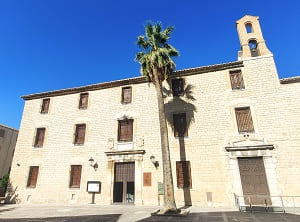
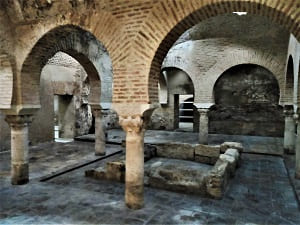
Going up the streets of the city towards the path that goes to the fortress we can see different religious buildings such as the Camarín de Jesús sanctuary where the image of Jesús Nazareno is located. It is inside the old convent of San Jose de los Cermelitos Descalzos from the 16th century.
Beyond is the convent of La Merced built on an old hermitage. It is neoclassical in style from the end of the 16th century.
Another of the religious buildings to visit is the church of San Juan from the 14th century built on an old mosque. At the same time, remains of the city prior to the Islamic era have been found.
The interior is neoclassical and baroque in style.
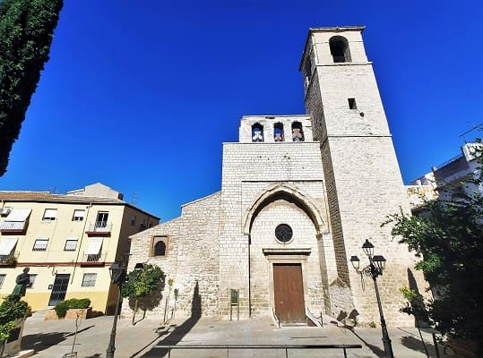
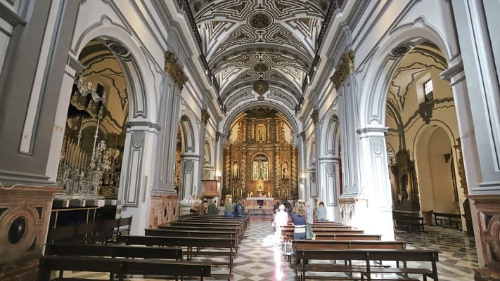
There are other religious buildings since Jaén was one of the most secular cities in Andalusia such as convents and churches and religious hospitals, such as the hospital of San Juan de Dios and the convent of Santo Domingo, from the late of the 16th century.
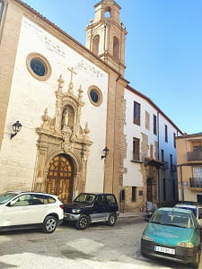
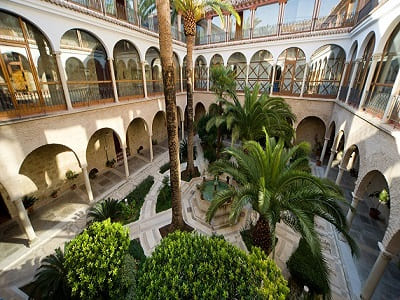
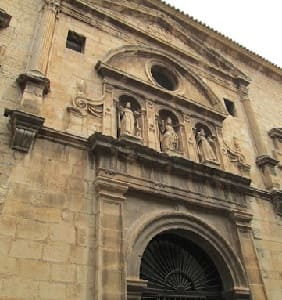
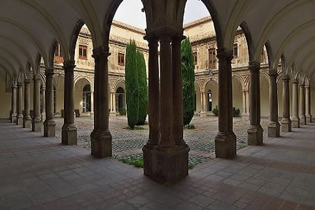
One of the main tourist destinations in Jaén after the cathedral and the Alcázar are the largest and best preserved Arab baths on the peninsula (slightly larger than those in Granada). They were built in the 11th century, in 1002, taking advantage of the remains of a Roman house or bath with a portico. Possibly renovated in the 12th century, due to the presence of remains of Almohad decoration that are preserved in some of its rooms.
After the conquest of the city in 1246 by Fernando III El Santo, they continued to be used during the first years of Christian rule. Between the 14th and 15th centuries, its function as a bath disappeared when the Christians established some tanneries in its rooms, the remains of which still remain in the warm and hot rooms. And they ended up full of rubble to serve as a foundation for the current Palace. At the end of the 16th century, Fernando de Torres y Portugal, 1st Count of Villardompardo and 7th Viceroy of Peru, built his Palace over the Baths, leaving these buried and hidden in the foundations and basements during the 18th and 19th centuries, which was essential for its maintenance.
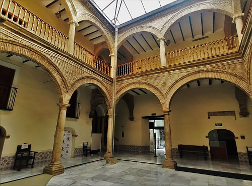
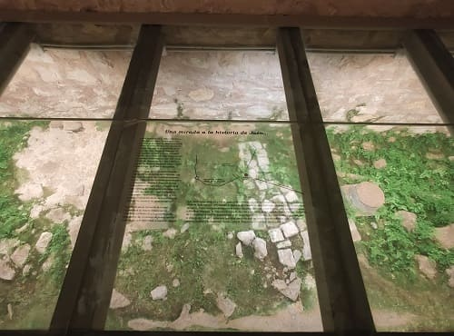
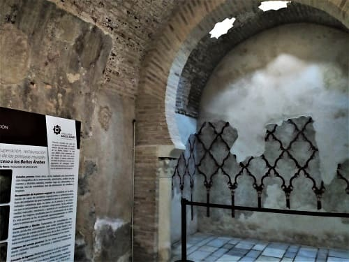
Also, from the top, the castle dominates the city with the most incredible views of the city. The fortress of Jaen or castle of Santa Catalina is an old defensive construction with a Christian-medieval finish, which crowns the hill of the same name, on a spur of the Sierra de Jabalcuz at an altitude of 820 m, from from which you can see the entire city of Jaén, the olive groves and the surrounding mountains of the area. Today there is the Jaen tourism inn, which has the best views of the entire city.
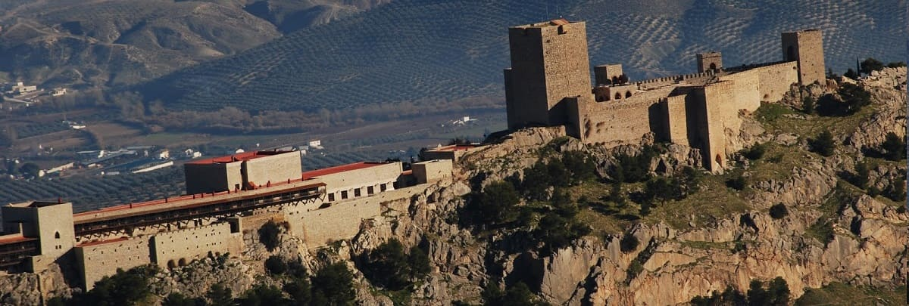
Then I headed for Úbeda where the hotel was very close. This city I went up to the keep to see the museum of defensive siege weapons and the history of the city wall. The next day would complete the visit.
© 2016 - All Rights Reserved - Designed by Sergio López Martínez
El sitio se mantiene gracias a la publicidad, por favor Desactiva Adblock para seguir navegando
He desactivado Adblock![[Valid RSS]](https://www.onepointsync.com/wp-content/uploads/2016/08/valid-rss-rogers.png "Validate my RSS feed")